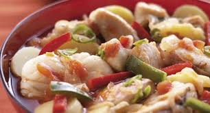
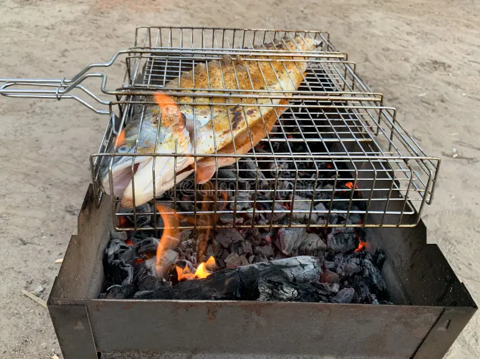
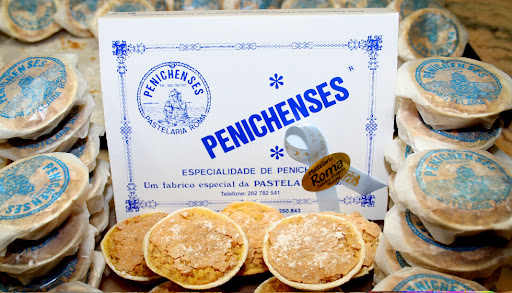

Onde o mar se transforma em sabor à mesa.

O prato rei da nossa gastronomia, feito com o peixe mais fresco do dia, batatas e um refogado rico e aromático.

A simplicidade no seu melhor: sardinhas, robalo ou dourada, pescados na costa e assados lentamente sobre brasas.

Os doces tradicionais à base de amêndoa e ovos que adoçam a boca de quem nos visita.
Visitar Peniche sem provar a sua gastronomia é deixar a viagem incompleta. Os nossos restaurantes, muitos deles localizados junto ao porto de pesca, garantem uma matéria-prima de excelência. Das mariscadas ao arroz de marisco, cada garfada conta uma história de séculos de ligação ao Oceano Atlântico.